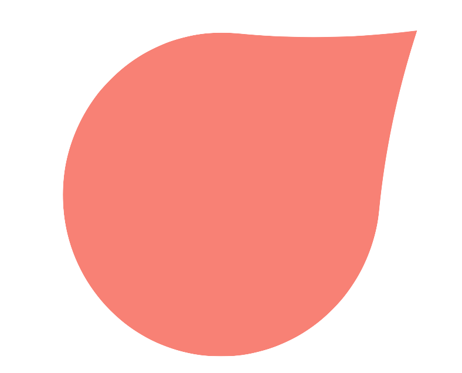
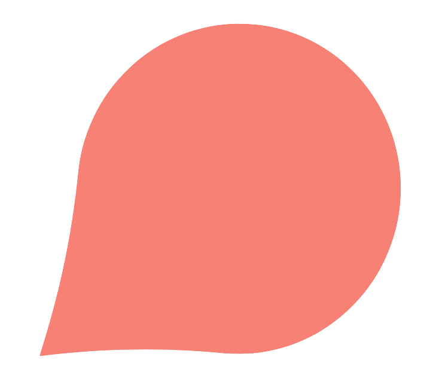
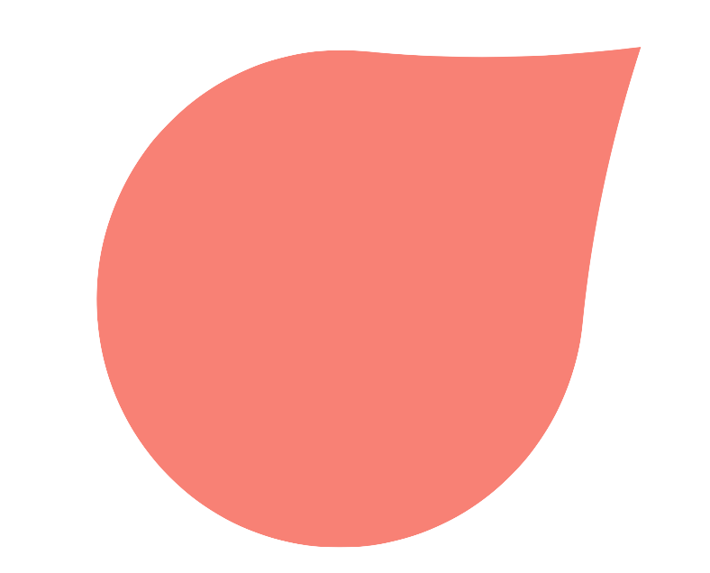
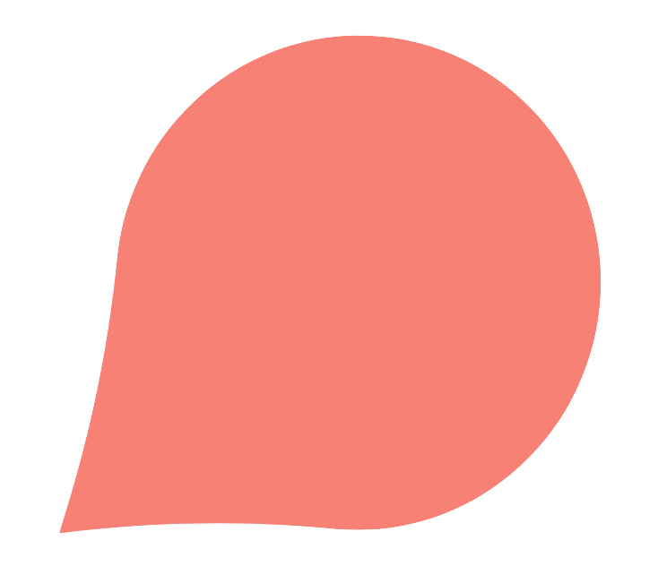

Our website is dedicated to spreading environmental awareness. We want to inspire others to join us in making crucial changes to the way we live and function on Earth. The only time we have is now, so let's make the most of it!
Take some time to check out the different tabs above. Hover over the flower petals below to discover some facts about the environment!
 


Alice Ivashina, Jessica Meyers, Karina Pinto, Connolly Woo